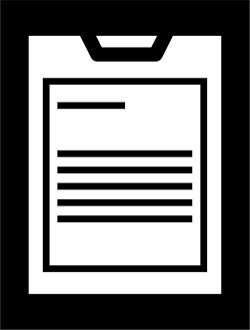
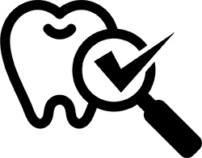
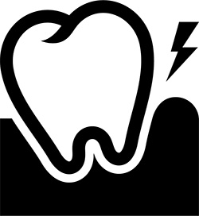
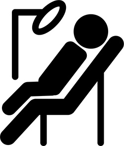

ユミデンタルオフィスの診療の流れ
鹿児島中央駅すぐの歯科医院「ユミデンタルオフィス」にご予約いただいてから、治療完了までの流れをフローチャート形式でご案内します。初めてご来院いただく方は、どのような流れで治療を進めていくのかぜひご確認ください。常に患者様一人ひとりに合わせたペースで治療を進めますので、ご不明点などありましたらお気軽にご相談ください。
初めてのご来院
- 問診票の記入
-

受付より問診票をお渡ししますので、現在のお口の状態や気になっている症状について、希望する治療内容などをご記入ください。
- コンサルテーション
-
初診の場合はすぐに治療を開始するのではなく、ラウンジにてクリニカルコーディネーターがじっくりとお話を伺います。この際に、当院の考え方などもご説明します。
- 応急処置・診査
-

症状によっては応急処置を行いますが、急いで治療する必要がない方については、お口の中の診査やレントゲン撮影などを行って基本的な資料収集を行います。
- 歯周病検査
-

治療前に、お口の健康のためには健康な歯周組織が必要であることをご説明し、歯周病検査を行います。
検査結果及び、なぜこうなったのかの原因や今後どのように改善していくかをご説明します。
- 歯周基本治療（2回目以降のご来院）
-

虫歯や炎症の原因である細菌を減らすためのホームケアをご一緒に確認していきます。 その後歯石除去クリーニングを行なっていきます。 口腔内写真やレントゲン撮影を行い、現在のお口の状況を１本１本写真を見ながらモニターで ご説明します。 また根管治療や小さな詰め物の治療も同時進行で行います。
- 治療計画のためのコンサルテーション
- 歯周基本治療の間にゆっくりと検討していただけるよう、現在のお口の状況を把握していただいた後に、患者さんの 治療内容へのご希望をお聞きしながら、治療方法の選択肢をご提案するコンサルテーションのお時間を設けます。
- 再評価
- 歯周病検査を行い、歯周基本治療でどの程度改善したかを判断します。 歯周病が進行している場合は、第二段階のお掃除である歯周外科治療についてご説明を行います。
- 修復治療・歯周外科治療
- 炎症のコントロールが行えた部位は被せ物を作製する修復治療に入ります。 歯周外科治療が必要な場合は、先に歯周外科治療を行なった後に修復治療を行います。
- 治療終了
- 治療後にも歯周病検査や口腔内写真撮影、レントゲン撮影などを行って詳細な治療結果や治療前治療後の比較をご確認いただきます。また、担当歯科衛生士よりお口の健康を維持するためのホームケアのポイントもお伝えします。
- メインテナンス・サポーティブペリオドンタルセラピー
- 残念ながら歯周病に完治はなく、口腔ケアを怠ると再発をしてしまいます。日々のお手入れを継続していただきながら、健康な 状態を維持できるようにメインテナンス及びサポーティブペリオドンタルセラピー（歯周病安定期治療）を定期的に行います。 担当歯科衛生士がそれぞれの患者さんのお口の状態を把握した上で、プロフェッショナルケアを行い、心も体もリフレッシュ していただけます。